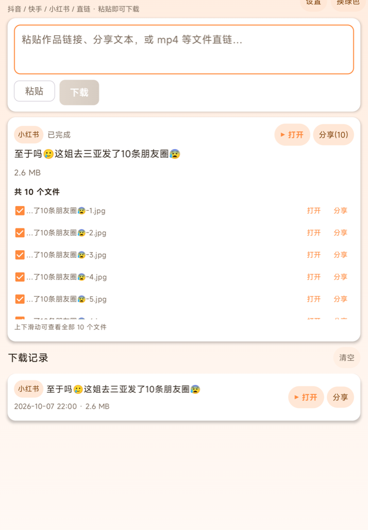

粘贴链接就能下
分享文本、口令、短链、普通直链都能自动识别。不支持的文件类型直接当普通文件下载。
抖音、快手、小红书、微信视频号、B 站、微博、TikTok、Instagram、X、YouTube 等
常用平台，以及 1700+ 个常见站点；视频、图文、音频和普通文件都能保存到本地。
macOS / Windows / Android 三端功能一致，完全免费、无需注册。

下面这些平台做了针对性适配（无水印、原始画质、清晰度选择），其余站点走通用解析。
其它平台：酷狗音乐、优酷、腾讯视频、爱奇艺、芒果 TV、SoundCloud……1700+ 个常见站点都能试； 认不出来的网页，也会自动嗅探里面的图片和视频。
macOS、Windows、Android 三个平台，界面和体验保持一致，换设备不用重新学。
分享文本、口令、短链、普通直链都能自动识别。不支持的文件类型直接当普通文件下载。
抖音取最高码率、小红书取原始文件（1080×1920）、B 站登录后支持 4K/HDR、YouTube 自动合并音视频。
粘贴主页或收藏页链接，自动抓取最近 20 条作品，勾选后逐条进下载队列。
类 IDM 的 8 段并发下载 + 断点续传 + 多 CDN 重试，大文件、长视频都能跑满带宽。
公众号文章里的视频、图集、贴纸页面……自动嗅探页面里的图片与视频，多文件可勾选批量分享。
网易云音乐、QQ 音乐整首下载（未登录时会提示只拿到试听片段），自动保存到系统「音乐」目录。
登录态默认只存本机；登录账号后可加密同步到你自己的云端，手机端 / 电脑端随时换用（B 站 4K 就靠它），可一键清空。
安卓端应用内下载安装（带进度与校验），电脑端一键跳转下载；App 内可直接提建议、联系官方。
当前版本 1.8.18 · 完全免费、无需注册。
Android 8.0 及以上 · v1.8.17 · 61.1 MB
首次打开需允许「安装未知来源应用」
Apple Silicon（M 系列）· v1.8.18 · 330.4 MB
未签名应用，首次打开请右键 →「打开」
Windows 10 / 11 · 安装包 · v1.8.17 · 330.2 MB
双击安装包按提示完成安装即可；不需要预装 Python 等环境
在抖音 / 小红书等 App 里点「分享 → 复制链接」，或直接复制作品页地址、mp4 直链。
点「粘贴 → 下载」，自动识别平台并解析；手机还能用「分享 → 秒存」直接唤起。
视频进相册 / 下载目录，图片和音频分类保存；完成后可一键打开、逐个分享或批量分享。